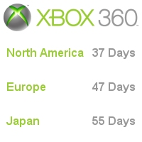

CESPage.com Xbox Weekly Update Eight
Xbox 360 Countdown Continues, Xbox 360 Kiosk and Origen Xbox 360
By CESPage.com Xbox, Published 16th October 2005
Xbox 360 Countdown Continues
With just around eight weeks to go the Xbox 360 is getting closer, CESPage.com Xbox will be following any announcements and still have the weekly update
until then also, including any titles and hardware available for the console.
This week's title in focus is Project Gotham Racing 3 the follow-up to the successful Project Gotham racing franchise on the Xbox. PGR3 features over 80
cars all can be driven at the start of the game but there are 10 exclusive concept cars to unlock for those virtual drivers who want more and get the most Kudos!
Project Gotham Racing 3 allows players to drive through cities such as Las Vegas, Tokyo, London and New York. You can also tune into Gotham TV the definitive
Xbox Live experience which allows up to 30,000 gamers to watch the best gamers race live, you can also watch your friend's race in a similar manner and PGR3
is not just a player's game but a spectator's game also.
Xbox 360 Kiosk
It won't be long before gamers should be seeing Xbox 360 Kiosks in stores in the next few weeks, with North America getting them first. These kiosks will be
the first chance for many including those in the UK to play on the Xbox 360, some of them will be playing videos initially but playable demos will follow soon after.
The Kiosk features a 23" HD Monitor, Dynamic Sound, 2x Wireless Controllers linked via security cable, Lit Header / Trim, Headphone input, Memory unit slot.
The Memory Unit slot allows people to plug in their own Memory Unit to download special content such as new game levels, dashboard designs and even retailer
specific content.
The kiosk also can provide product information and also information about titles available for the Xbox 360, plus Xbox live can be test driven without the need for
an Internet connection plus videos and information about Xbox Live installation and features such as Marketplace.
Origen Xbox 360 Week 9
This week's Origen Xbox 360 update gives gamers the chance to blast their way to Origen. To win the places gamers must come top of the Double Team leader board
for Halo 2 on the 24th of October the top player will win a place for themselves and their fellow team member which is two places altogether.
So between 11th October and 24th October you need to get playing, or at least practising as only the best gamers will get these two chances to go to Origen.
If you live in UK, Ireland, France, Germany, Spain, Italy, the Netherlands, Denmark, Finland, Norway, Sweden, Belgium, Switzerland, Austria, Portugal or Greece
then you can enter, so get playing in this Halo 2 Tournament for places 5 and 6 at Origen.
You visit the Origen Xbox 360 website at www.origenxbox360.com